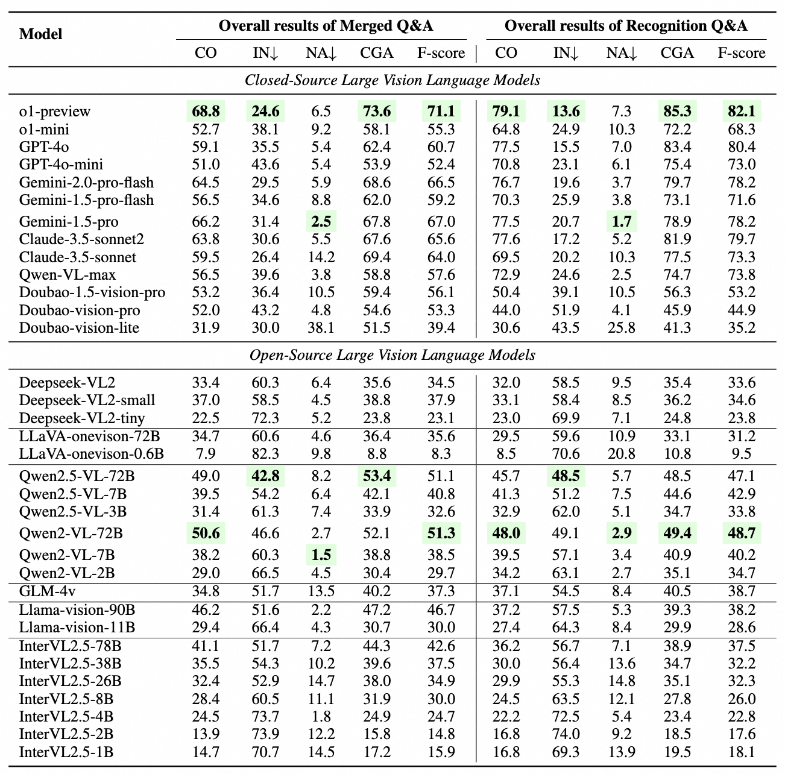

| # | Model | Overall results of Merged Q&A | Overall results of Recognition Q&A | ||||||||
|---|---|---|---|---|---|---|---|---|---|---|---|
| CO | IN↓ | NA↓ | CGA | F-score | CO | IN↓ | NA↓ | CGA | F-score | ||
|
o1-preview 🥇
OpenAI |
68.8 | 24.6 | 6.5 | 73.6 | 71.1 | 79.1 | 13.6 | 7.3 | 85.3 | 82.1 | |
|
Gemini-1.5-Pro 🥈
|
56.5 | 34.6 | 8.8 | 62.0 | 59.2 | 70.3 | 25.9 | 3.8 | 73.1 | 71.6 | |
|
Gemini-2.0-Pro-flash 🥉
|
64.5 | 29.5 | 5.9 | 68.6 | 66.5 | 76.7 | 19.6 | 3.7 | 79.7 | 78.2 | |
|
Claude-3.5-sonnet2
Anthropic |
63.8 | 30.6 | 5.5 | 67.6 | 65.6 | 77.6 | 17.2 | 5.2 | 81.9 | 79.7 | |
|
Claude-3.5-sonnet
Anthropic |
59.5 | 26.4 | 14.2 | 69.4 | 64.0 | 69.5 | 20.2 | 10.3 | 77.5 | 73.3 | |
|
GPT-4o
OpenAI |
59.1 | 35.5 | 5.4 | 62.4 | 60.7 | 77.5 | 15.5 | 7.0 | 83.4 | 80.4 | |
|
Qwen-VL-max
Alibaba |
56.5 | 39.6 | 3.8 | 58.8 | 57.6 | 72.9 | 24.6 | 2.5 | 74.7 | 73.8 | |
Main Results

Performance comparison of closed source and open source LVLMs on multi-hop QAs (i.e. Merged Q&A and Recognition Q&A). For metrics, CO, NA, IN, and CGA denote ``Correct'', ``Not attempted'', ``Incorrect'', and ``Correct given attempted'', respectively. The highest scores among models in each section are highlighted in green.
Overall Rankings on ChineseSimpleVQA

Rankings of different models on ChineseSimpleVQA.
Performance on Different Topics

Correctness(CO) metric for eight topics. We show the top 10 models here.
Further Analysis

Up: Calibration of LLMs based on their stated confidence for Recognition and final Q&A.
Down: Improvement in accuracy with increased test-time compute using Best-of-N for Recognition and final Q&A.